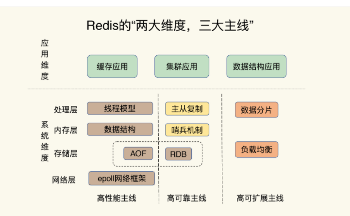

手摸手 Redis 技术与实战教程
Started at Jan. 2021 By Jacob Xi

内容简介
本书是本人的“手摸手战术教程”系列的第三本，历经两个月的时间，终于伴随着2021年春节前拿本🏡和春节假期期间🎆充电完成🍋，感谢家人，朋友，同事们的支持与理解，也感谢所在team同事们的帮助与指导。为了还贷！！！😁 #顺便求一个Cloudhouse的邀请
Previous on 手摸手
本书主要内容
本书共10章着重介绍了Redis核心基础数据结构，AOF日志，RDB备份，Redis主从数据同步，哨兵机制，Redis Cluster, 切片集群，Bigkey阻塞查询，Redis缓冲区，旁路缓存，LRU-LFU缓存替换策略，缓存击穿，缓存雪崩，缓存穿透，缓存污染，ACID & Locks & Pika, Codis, Gossip, 脑裂，数据倾斜，Redis6.0,NVM, RESP, Redis on K8s 以及期中期末综合考题

Comment ca va? C'est Moi
Hello, this is me, Jacob. Currently, I'm working as DevOps and Cloud Engineer in SAP, and I'm the certified AWS Solution Architect and Certified Azure Administrator, Kubernetes Specialist, Jenkins CI/CD and ElasticStack enthusiast.
I was working as Backend Engineer in New York City and achieved my CS master degree in SIT, America. Believe it or not, I'll keep writing, more and more books will come out at such dramatic and unprecedented 2021.
If you have anything want to talk to me directly, you can reach out for via email xichao2015@outlook.com。
Salute, c'est moi, Jacob. Actuellement, je travaille en tant qu'ingénieur DevOps et Cloud dans SAP, et je suis architecte de solution AWS certifié et administrateur Azure certifié, spécialiste Kubernetes et passionné de CI/CD.
Je travaillais en tant qu'ingénieur backend à New York et j'ai obtenu mon master CS à SIT, en Amérique. Croyez-le ou non, je continuerai à écrire, de plus en plus de livres sortiront cette année.
目录大纲
- 第一章 Redis 概述
- 第二章 Redis基础篇
- 第三章 Redis数据结构
- 第四章 Redis性能影响因子
- 第五章 Redis缓存介绍
- 第六章 Redis性能与锁机制以及ACID
- 第七章 Redis Cluster集群介绍及管理
- 第八章 Redis学习与操作
- 第九章 使用k8s安装Redis集群
- 第十章 期末总结章
To be continue
本人将带来手摸手战术教程更多的内容和文章， 接下来的将在Datatase, Linux性能, Golang, Chef, Azure900, Azure103, AWS Solution Arcitect, AWS Big Data Speciality, Istio, Python带来更多更全面的电子书，敬请期待。